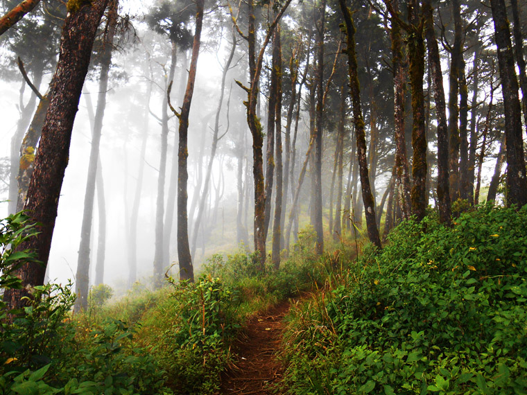
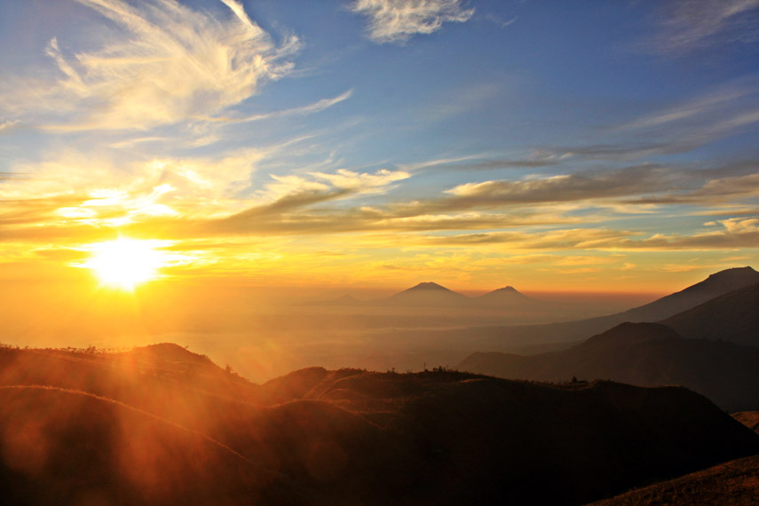

Gunung Prau
Kabupaten Wonosobo, Jawa Tengah | 2,565 MDPL
unung Prau terletak di kawasan dataran tinggi Dieng, Kabupaten Wonosobo, Desa Patakbanteng dengan ketinggian 2.565 Mpdl. Dengan jalur pendakian yang relatif mudah dan cukup jelas bagi para pendaki serta view yang istimewa menjadikan Gunung Prau menjadi gunung favorit bagi para pendaki saat ini.
Untuk mendaki Puncak Gunung Prau, pendaki hanya membutuhkan sekitar 3-4 jam trekking. Ada 2 jalur pendakian yang menjadi favorit para pendaki yaitu melalui jalur Dieng ataupun Patak Banteng. Jalur pendakian Via Dieng cenderung lebih santai dan tidak berbahaya jika dibandingkan dengan jalur via Patak Banteng yang jalurnya cukup terjal meskipun waktu tempuhnya lebih singkat.

Dari puncak Gunung Prau pendaki dapat menikmati pemandangan serba cantik di antaranya hamparan keindahan bukit teletubbies dan bunga yang sangat menawan. Tak hanya itu, kita juga dapat menyaksikan keindahan jajaran Gunung Sumbing, Sindoro, Merapi, Merbabu, dan Slamet. Puncak Gunung Prau sering dijadikan tempat untuk hunting spot Golden Sunrise yang terbukti spektakuler.
Gunung Prau dapat menjadi destinasi utama kalian untuk menikmati keindahan alam dari ketinggian. Pendaki akan dibuat jatuh hati melihat Telaga Warna Dieng dari ketinggian, hamparan bunga dan bukit Teletubiesnya.